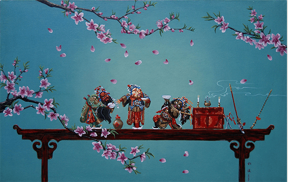
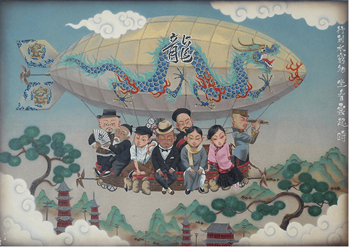

杜溪，当代优秀的原创艺术家，中国著名油画艺术家尚丁的外甥，云南艺术学院美术学院副教授唐志冈的得意门生。他的油画风格将与现代中不同时代的幽默结合起来，用80后的幽默观念诠释古典故事的美，创造出中国历史人物、西游、青蛇白蛇、三国以及民国时期的艺术作品。杜溪沉醉于中国文化历史，有着身后中国历史底蕴，他的高考历史分数曾创下省里第一名，他有着无尽的想象和创作灵感。
古木桌“三国演义后期”与“神仙系列”，杜溪的人物角色逐渐与背景分开来，像个立体的胸瓷娃娃活跃于画面上，人物的尺寸也放大了。
民国时期系列（工业革命初进中国），杜溪模仿了发黄相纸的色调，人物角色各各摆POSE的姿态神情，暗示透过新进工具，“相机”的镜头，见证记录了新时代英雄人物与男男女女。
杜溪的创作仅遵循一个脉络下来，其使用的技法也与系列主题和时代相辅相成。低调的细腻！唯具慧眼得意识其细节！